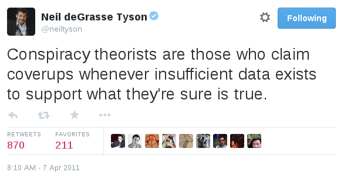
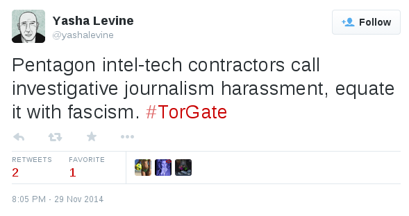
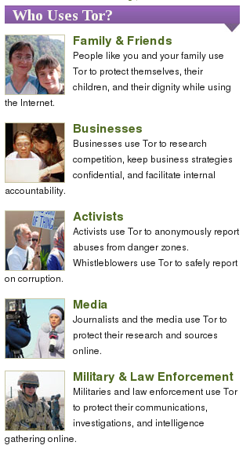
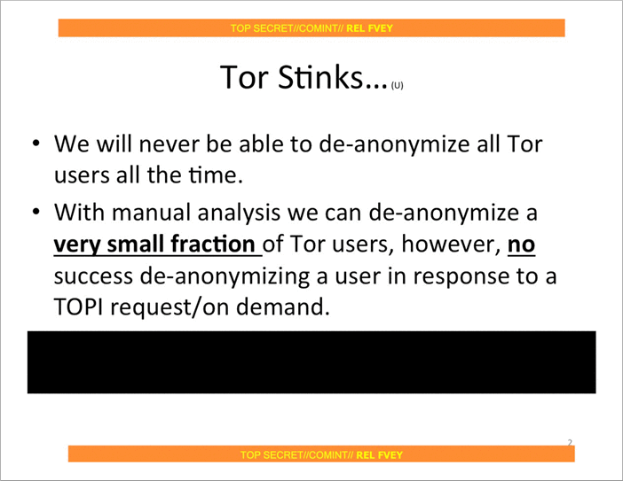

Fact-checking Pando’s smears against Tor
If you’ve been able to ignore Pando Daily’s 100% non-technical smear campaign against the Tor Project and its developers and supporters, you’re lucky, and you may wish to stop reading now. Otherwise, read on, and perhaps prepare to lose a few brain cells.
Yasha Levine’s “investigation” against Tor unveiled what’s already prominently displayed on Tor’s website: that it was designed by the Navy and that it receives a lot of federal funding, the bulk of which comes from the Department of Defense.
To be clear, talking about Tor’s government funding is a very important discussion to have. But Yasha didn’t discuss potential threats to Tor users’ anonymity that this funding might cause, nor what potential solutions would be. Instead, he implied that there’s some sort of conspiracy between Tor developers and the US government, and that the Tor network cannot be trusted, apparently oblivious that the decentralized and open nature of the Tor network and it’s codebase makes planting backdoors nearly impossible.
Trolling, harassment, and spreading conspiracy theories
Using only the fact that Tor receives federal funding, Pando has managed to rile up an anti-Tor community of Twitter trolls who insist that blatantly false things are true, like: using Tor makes it easier for the government to track you, that Tor is a honeytrap, that Tor developers are anti-privacy and support NSA spying, and that you can tell everything about a woman because she dyes her hair.
They also borrow tactics from GamerGate, including making puppet Twitter accounts to harrass women, and to continue harassing people when they get blocked. They even started using the GamerGate-copycat hashtag #TorGate, not realizing that it kinda reinforces the sexist troll image they’re trying to deny.

Government funding might be the first step in exposing a scandal, but not the only step
Throughout all of this, the Pando people (Yasha Levine, Paul Carr, and Mark Ames) and their #TorGate followers haven’t presented a shred of technical evidence against Tor’s safety. Their concerns are 100% speculation. They make the government funding point (an easy point to make since Tor prominently lists their sponsors and publishes financial reports for the sake of transparency), but then fail to connect any dots.
This is important because if they could present an actual specific concern, we can verify if their concern is real or not. The code is open, and anyone (including you) can easily run and study your own Tor nodes to confirm your suspicions.
Security issues with Tor get discovered all the time, and each time they get thoroughly researched (someone often ends up publishing a paper), the codebase gets patched, and Tor blogs about it to inform the public what the problem was and how it was fixed. See some recent examples here, here, here, here, here, and here.
The #TorGate people don’t know of any problems that exist with Tor or they would articulate what they are. They’re not interested in fixing problems to make Tor safer for everyone, they’re only interested in spreading conspiracies about Tor being run by the Feds as a honeytrap to spy on activists. These accusations are quite serious considering that activists around the world literally rely on Tor for their lives. Fortunately, they’re complete nonsense.
When I asked Yasha on Twitter how he would fix Tor to make it trustworthy and safe for everyone to use, the best he could come up with is to post prominent warnings on Tor’s website that says “USE AT OWN RISK” because it receives DoD grants. Keep in mind that potential answers could be: fork the project (it’s open source, after all) and build a separate onion routing network that doesn’t receive government funding; stop applying for government grants in favor of other sources of funding; etc.
Fact checking Pando’s Tor smear
In the faux-exposé that started all of this, “Almost everyone involved in developing Tor was (or is) funded by the US government”, Yasha writes:
Let’s start with the basics: Tor was developed, built and financed by the US military-surveillance complex. Tor’s original — and current — purpose is to cloak the online identity of government agents and informants while they are in the field: gathering intelligence, setting up sting operations, giving human intelligence assets a way to report back to their handlers — that kind of thing. This information is out there, but it’s not very well known, and it’s certainly not emphasized by those who promote it.
Cloaking the online identity of government agents and informants is likely the reason that the DoD helps fund Tor—they depend on it as much as everyone else—but this is not the purpose of Tor.
The purpose of Tor is to let anybody—normal internet users, businesses with trade secrets, activists, journalists and their sources, police, and yes, the military—have an anonymous connection to the net. If an onion routing network has any hope of hiding who is using it, it needs a diversity of users, all of whom receive equal benefits of anonymity.
This paper by Acquisti, Dingledine, and Syverson, On the Economics of Anonymity, goes into much greater detail, but here’s a quote from it that accurately describes the true purpose of Tor:
Single-hop web proxies like the Anonymizer protect end users from simple threats like profile-creating websites. On the other hand, users of such commercial proxies are forced to trust them to protect traffic information. Many users, particularly large organizations, are rightly hesitant to use an anonymity infrastructure they do not control. However, on an open network such as the Internet, running one’s own system won’t work: a system that carries traffic for only one organization will not hide the traffic entering and leaving that organization. Nodes must carry traffic from others to provide cover. The only viable solution is to distribute trust. That is, each party can choose to run a node in a shared infrastructure, if its incentives are large enough to support the associated costs. Users with more modest budgets or shorter-term interest in the system also benefit from this decentralized model, because they can be confident that a few colluding nodes are unlikely to uncover their anonymity.
In short, the diversity of users is what makes Tor work. If Tor were only built for US spies to use then anyone who sees a Tor user visit their website knows that the spies must be interested in them. Because Tor has millions of diverse users, if you see a Tor user visit your website all you know is that they’re using Tor. They could be a spy, but they could also be an activist, a hacker, or just someone who doesn’t want ad networks tracking them as they browse the web. You simply don’t know, and that’s what makes it work. Here’s an excellent overview of the diverse communities of people that benefit equally from Tor.
Yasha claims that: “This information is out there, but it’s not very well known, and it’s certainly not emphasized by those who promote it.” Here’s a screenshot from the front-page of Tor’s website. Notice the “Military & Law Enforcement” section.

Check out the prominent Tor overview page which begins:
Tor was originally designed, implemented, and deployed as a third-generation onion routing project of the U.S. Naval Research Laboratory. It was originally developed with the U.S. Navy in mind, for the primary purpose of protecting government communications. Today, it is used every day for a wide variety of purposes by normal people, the military, journalists, law enforcement officers, activists, and many others.
The Tor Project has always been completely honest about their origin and funding. In fact, the non-profit goes further to be transparent about everything it does, including funding, than any other organization that I know about. If you can find any organization that is as transparent as the Tor Project, please post about it in the comments. I’m curious if one exists.
Continuing on with Yasha’s hit piece, he goes on to cherry-pick the military and police uses of Tor, ignoring the rest of the users, and then sets the stage for conspiracy nonsense:
NSA? DoD? U.S. Navy? Police surveillance? What the hell is going on? How is it possible that a privacy tool was created by the same military and intelligence agencies that it’s supposed to guard us against? Is it a ruse? A sham? A honeytrap? Maybe I’m just being too paranoid…
Unfortunately, this is not a tinfoil hat conspiracy theory. It is cold hard fact.
Then Yasha goes on to explain the history of Tor, it’s military origins, how the project was open sourced and handed to EFF to manage. He quotes a 2004 EFF press release about Tor and accuses them of failing to mention that “this anonymity tool was developed primarily for military and intelligence use.” He criticizes them for focusing on its ability to protect free speech from oppressive regimes. EFF focused on this because Tor can help protect free speech from oppressive regimes. EFF is an non-profit law firm that’s devoted to upholding constitutional rights online. Just as the Navy supports Tor because they can use it to communicate securely, EFF supports Tor because it’s a vital tool for free speech and censorship circumvention. Yasha seems to be pretending that ordinary people’s privacy isn’t protected when they use Tor, which is a lie.
Tor is a tide that lifts all boats. When Tor was open sourced, it was no longer “developed primarily for military and intelligence use.” It was opened up under a free software license and given to all internet users, in all their diversity, who have owned it and relied on it ever since. It’s used by government agents, police investigating drug dealers, drug dealers trying not to get caught by police, investigative journalists, whistleblowers, and private citizens trying to browse the web privately.
In the end Tor does one thing: it keeps people’s IP addresses anonymous while they use the internet. This is why everyone with a vested interest in online anonymity, including the DoD (to keep their agents safe), and EFF (who’s currently suing the NSA for illegal spying), supports Tor.
Yasha goes on to outline Tor’s funding sources, much of them from either the DoD or the State Department.
I’d like to take a moment to point out that Tor’s funding model has some big problems. It’s dangerous to be too reliant on a single entity for funding—if their federal funding is cut, Tor is in trouble. And of course funders might try to influence the direction of the project and the research. In Tor’s case this is mitigated by the fact that 100% of the scientific research and source code that Tor releases is open, that the crypto math is peer-reviewed and backed up by the laws of physics, and by the fact that the Tor Project itself doesn’t run the network—the network is diverse and decentralized, run by volunteers all over the world (me included). It would be excellent if there were a way for Tor to get weaned off DoD funding and replace the bulk of it with some other source. And I’m sure they would be interested in doing this, if other sources of money made themselves available.
Personally I prefer that Tor gets the funding it needs to continue its groundbreaking anonymity research and to continue to improve its product and the stability of its network. I rely on it on a daily basis to do my work in journalism and source protection safely and securely. It would be great to have a real conversation about this without Pando’s baseless conspiracy theories.
In the section “How safe is Tor, really?”, Yasha points out that traffic correlation attacks exist, and that Tor isn’t safe against global adversaries (which are both likely-unsolvable low-latency onion routing problems that have been outlined in Tor’s design document since at least 2004). Tor has done more research on these issues than anyone else, and the latest version of Tor is the state-of-the-art technology in this area, but it will probably never be perfect, because it’s probably not possible for it to be perfect.
In his hit piece, Yasha lists some examples of Tor failing to protect people:
- The Harvard kid who was the only Tor user on Harvard’s network at the time that he sent his bomb threat.
- The Freedom Hosting and Silk Road hacks (problems with the web apps that were hosted as Tor hidden services, not with Tor itself).
- Exit node sniffing (an issue with people using plaintext protocols on the internet; people are just as vulnerable when using airport wifi, though perhaps they’re less likely to have an attacker on their network than to be using a malicious exit node).
These sort of things happen a lot, and they will continue to happen a lot. Like plane crashes, we can study and learn from them each time to make them less likely to happen in the future. Tor continues to improve, and to make these attacks harder, more expensive, or impossible to pull off.
For example, when FBI hacked Freedom Hosting servers and started attacking visitors’ Tor Browsers with javascript exploits, they only attacked old versions of Tor Browser (based on an old Firefox exploit) because new versions weren’t vulnerable. The major problem there was that people weren’t upgrading their software. Now Tor Browser doesn’t just warn you when your browser is out-of-date, it will automatically upgrade it for you too. Next time a Freedom Hosting-style attack happens, no one will be running an outdated Tor Browser.
This doesn’t mean that it’s dangerous to use Tor, especially if you pay attention to the list of things to pay attention to that all Tor users see when they download Tor Browser, and again when they open Tor Browser. It certainly doesn’t mean that Tor is a honeytrap.
Yasha references Snowden documents (2.5 years old at this point) about NSA’s attempts to attack Tor. Of course, he didn’t mention the slide that confirms that (at least 2.5 years ago) NSA wasn’t a global adversary, and therefore couldn’t easily deanonymize Tor users by connecting the routing dots. We’ve learned a lot about NSA’s almost omnipotent capabilities from the Snowden leaks, and this slide gave me great hope that we still have a fighting chance at privacy.

He states that: “Tor co-founder Roger Dingledine revealed that the Tor Network is configured to prioritize speed and route traffic through through the fastest servers/nodes available,” as if this were a secret, and Roger weren’t discussing it in order to figure out how to solve the problem of the trade-off between circuit diversity and speed.
It’s important to know that simply running high bandwidth nodes doesn’t mean you’re malicious. Unless you’re an exit node, 100% of the traffic that travels through your node is encrypted. If you are an exit node, then you can only easily spy on plaintext traffic, e.g. you can see HTTP traffic but you can’t see HTTPS traffic—the same as a normal network attacker on open wifi. And unless you control both the entry and exit nodes in a single circuit (much of the arms race right now is focused on making this impossible), you can’t deanonymize anyone. Tor is built this way by design.
Finally, Yasha ends his the article with Edward Snowden and the fact that he ran some high-bandwidth Tor nodes, as if this was a bad or sketchy thing for him to do. Running Tor nodes is an excellent thing to do for anyone who cares as much about internet freedom and privacy as Snowden does to contribute to the movement.
Pando is not a credible news source
Investigative journalism is incredibly important, even when the target of the investigation is an organization like the Tor Project. Following the money is a great way to begin discovering corruption. Pando’s reporting about Tor is not investigative journalism. They set out to attack Tor, found that it gets lots of government funding, and wrote a story about that, pretending that that’s the same thing as Tor being malicious.
If there were some sort of document, like an email or a contract, that shows that a Tor developer was doing something malicious on behalf of the government, that would be a huge piece of investigative journalism. If there were evidence of an intentional design flaw in the Tor network, similar to NSA’s sabotage of encryption standards through their BULLRUN) program, that would be a huge deal. Pando didn’t find anything that wasn’t published on torproject.org.
Who knows Pando’s true motives—most likely, they’re doing it for the traffic by stirring up controversy, like a tabloid. But regardless of the intentions, they’re certainly attacking one of the most important privacy tools in our collective toolbag. Nothing good will come from people who truly need Tor, such as whistleblowers and dissidents, believing Pando’s nonsense.
Luckily, I don’t think that’s likely to happen.